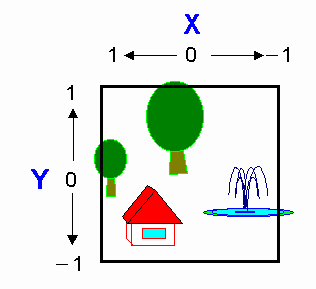

The normal screen coordinate system takes a picture of a view that is currently represented in the view coordinate system to place that view in much the same way as a camera takes a picture of a view to record that view on film. In other words, the normal screen coordinate system converts a view volume of a quadrangular pyramid in the view coordinate system into a view volume of a rectangular solid screen by applying conversion algorithms. By using perspective transformation calculations, the conversion process ensures that objects that are located further away appear small.
It would be better to recognize the normal screen coordinate system as display equipment for the virtual 3D space created inside your computer with less physical restrictions, such as the size for a frame buffer. As with the view coordinate system, the direction of view is the Z-axis and the center of the screen is the origin.
Coordinates in the normal screen coordinate system are expressed as (xs,ys,zs).

The normal screen coordinate system is the display equipment for the virtual 3D space inside your computer. As with the view coordinate system, the viewing direction is the Z-axis and the center of the screen is the origin.
Coordinates in the normal screen coordinate system are expressed as (xs,ys,zs).
Nintendo® Confidential
Copyright © 1999
Nintendo of America Inc. All Rights Reserved
Nintendo and N64 are registered trademarks of Nintendo
Last Updated March, 1999